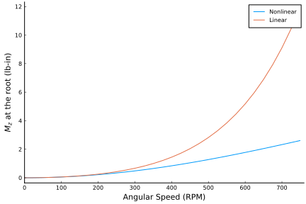
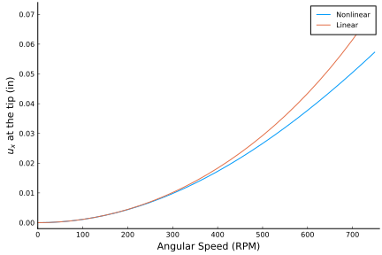
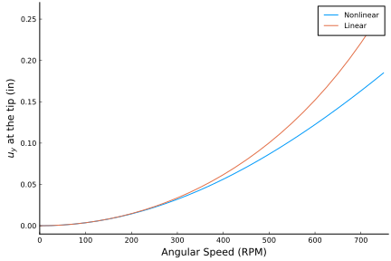
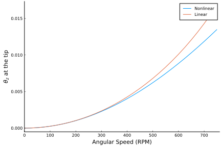
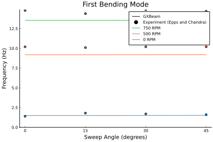
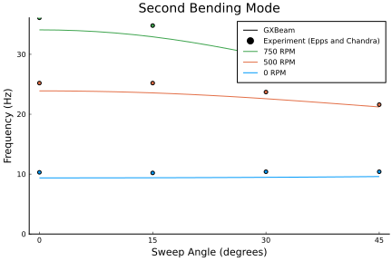
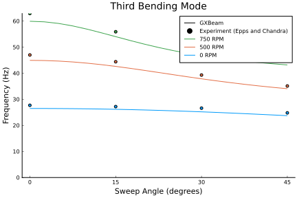
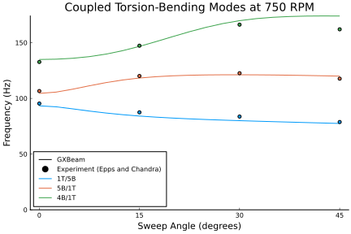

Rotating Beam with a Swept Tip
In this example we analyze a rotating beam with a swept tip. The parameters for this example come from "Finite element solution of nonlinear intrinsic equations for curved composite beams" by Hodges, Shang, and Cesnik.

This example is also available as a Jupyter notebook: rotating.ipynb.
using GXBeam, LinearAlgebra
sweep = 45 * pi/180
rpm = 0:25:750
# straight section of the beam
L_b1 = 31.5 ## inch
r_b1 = [2.5, 0, 0]
nelem_b1 = 13
lengths_b1, xp_b1, xm_b1, Cab_b1 = discretize_beam(L_b1, r_b1, nelem_b1)
# swept section of the beam
L_b2 = 6 ## inch
r_b2 = [34, 0, 0]
nelem_b2 = 3
cs, ss = cos(sweep), sin(sweep)
frame_b2 = [cs ss 0; -ss cs 0; 0 0 1]
lengths_b2, xp_b2, xm_b2, Cab_b2 = discretize_beam(L_b2, r_b2, nelem_b2;
frame = frame_b2)
# combine elements and points into one array
nelem = nelem_b1 + nelem_b2
points = vcat(xp_b1, xp_b2[2:end])
start = 1:nelem_b1 + nelem_b2
stop = 2:nelem_b1 + nelem_b2 + 1
lengths = vcat(lengths_b1, lengths_b2)
midpoints = vcat(xm_b1, xm_b2)
Cab = vcat(Cab_b1, Cab_b2)
# cross section
w = 1 ## inch
h = 0.063 ## inch
# material properties
E = 1.06e7 ## lb/in^2
ν = 0.325
ρ = 2.51e-4 ## lb sec^2/in^4
# shear and torsion correction factors
ky = 1.2000001839588001
kz = 14.625127919304001
kt = 65.85255016982444
A = h*w
Iyy = w*h^3/12
Izz = w^3*h/12
J = Iyy + Izz
# apply corrections
Ay = A/ky
Az = A/kz
Jx = J/kt
G = E/(2*(1+ν))
compliance = fill(Diagonal([1/(E*A), 1/(G*Ay), 1/(G*Az), 1/(G*Jx), 1/(E*Iyy),
1/(E*Izz)]), nelem)
mass = fill(Diagonal([ρ*A, ρ*A, ρ*A, ρ*J, ρ*Iyy, ρ*Izz]), nelem)
# create assembly
assembly = Assembly(points, start, stop;
compliance = compliance,
mass = mass,
frames = Cab,
lengths = lengths,
midpoints = midpoints)
# create dictionary of prescribed conditions
prescribed_conditions = Dict(
# root section is fixed
1 => PrescribedConditions(ux=0, uy=0, uz=0, theta_x=0, theta_y=0, theta_z=0)
)
nonlinear_states = Vector{AssemblyState{Float64}}(undef, length(rpm))
linear_states = Vector{AssemblyState{Float64}}(undef, length(rpm))
for i = 1:length(rpm)
# global frame rotation
w0 = [0, 0, rpm[i]*(2*pi)/60]
# perform nonlinear steady state analysis
system, converged = steady_state_analysis(assembly,
angular_velocity = w0,
prescribed_conditions = prescribed_conditions)
nonlinear_states[i] = AssemblyState(system, assembly;
prescribed_conditions = prescribed_conditions)
# perform linear steady state analysis
system, converged = steady_state_analysis(assembly,
angular_velocity = w0,
prescribed_conditions = prescribed_conditions,
linear = true)
linear_states[i] = AssemblyState(system, assembly;
prescribed_conditions = prescribed_conditions)
endTo visualize the solutions we will plot the root moment and tip deflections against the angular speed.
using Plots
pyplot()# root moment
plot(
xlim = (0, 760),
xticks = 0:100:750,
xlabel = "Angular Speed (RPM)",
yticks = 0.0:2:12,
ylabel = "\$M_z\$ at the root (lb-in)",
grid = false,
overwrite_figure=false
)
Mz_nl = [-nonlinear_states[i].points[1].M[3] for i = 1:length(rpm)]
Mz_l = [-linear_states[i].points[1].M[3] for i = 1:length(rpm)]
plot!(rpm, Mz_nl, label="Nonlinear")
plot!(rpm, Mz_l, label="Linear")
plot!(show=true)
# x tip deflection
plot(
xlim = (0, 760),
xticks = 0:100:750,
xlabel = "Angular Speed (RPM)",
ylim = (-0.002, 0.074),
yticks = 0.0:0.01:0.07,
ylabel = "\$u_x\$ at the tip (in)",
grid = false,
overwrite_figure=false
)
ux_nl = [nonlinear_states[i].points[end].u[1] for i = 1:length(rpm)]
ux_l = [linear_states[i].points[end].u[1] for i = 1:length(rpm)]
plot!(rpm, ux_nl, label="Nonlinear")
plot!(rpm, ux_l, label="Linear")
plot!(show=true)
# y tip deflection
plot(
xlim = (0, 760),
xticks = 0:100:750,
xlabel = "Angular Speed (RPM)",
ylim = (-0.01, 0.27),
yticks = 0.0:0.05:0.25,
ylabel = "\$u_y\$ at the tip (in)",
grid = false,
overwrite_figure=false
)
uy_nl = [nonlinear_states[i].points[end].u[2] for i = 1:length(rpm)]
uy_l = [linear_states[i].points[end].u[2] for i = 1:length(rpm)]
plot!(rpm, uy_nl, label="Nonlinear")
plot!(rpm, uy_l, label="Linear")
plot!(show=true)
# rotation of the tip
plot(
xlim = (0, 760),
xticks = 0:100:750,
xlabel = "Angular Speed (RPM)",
ylabel = "\$θ_z\$ at the tip",
grid = false,
overwrite_figure=false
)
theta_z_nl = [4*atan(nonlinear_states[i].points[end].theta[3]/4)
for i = 1:length(rpm)]
theta_z_l = [4*atan(linear_states[i].points[end].theta[3]/4)
for i = 1:length(rpm)]
plot!(rpm, theta_z_nl, label="Nonlinear")
plot!(rpm, theta_z_l, label="Linear")
plot!(show=true)
We will now compute the eigenvalues of this system for a range of sweep angles and and angular speeds.
sweep = (0:2.5:45) * pi/180
rpm = [0, 500, 750]
nev = 30
λ = Matrix{Vector{ComplexF64}}(undef, length(sweep), length(rpm))
U = Matrix{Matrix{ComplexF64}}(undef, length(sweep), length(rpm))
MV = Matrix{Matrix{ComplexF64}}(undef, length(sweep), length(rpm))
state = Matrix{AssemblyState{Float64}}(undef, length(sweep), length(rpm))
eigenstates = Matrix{Vector{AssemblyState{ComplexF64}}}(undef,
length(sweep), length(rpm))
for i = 1:length(sweep)
local L_b1, r_b1, nelem_b1, lengths_b1
local xp_b1, xm_b1, Cab_b1
local cs, ss
local L_b2, r_b2, nelem_b2, frame_b2, lengths_b2
local xp_b2, xm_b2, Cab_b2
local nelem, points, start, stop
local lengths, midpoints, Cab, compliance, mass, assembly
# straight section of the beam
L_b1 = 31.5 # inch
r_b1 = [2.5, 0, 0]
nelem_b1 = 20
lengths_b1, xp_b1, xm_b1, Cab_b1 = discretize_beam(L_b1, r_b1, nelem_b1)
# swept section of the beam
L_b2 = 6 # inch
r_b2 = [34, 0, 0]
nelem_b2 = 20
cs, ss = cos(sweep[i]), sin(sweep[i])
frame_b2 = [cs ss 0; -ss cs 0; 0 0 1]
lengths_b2, xp_b2, xm_b2, Cab_b2 = discretize_beam(L_b2, r_b2, nelem_b2;
frame = frame_b2)
# combine elements and points into one array
nelem = nelem_b1 + nelem_b2
points = vcat(xp_b1, xp_b2[2:end])
start = 1:nelem_b1 + nelem_b2
stop = 2:nelem_b1 + nelem_b2 + 1
lengths = vcat(lengths_b1, lengths_b2)
midpoints = vcat(xm_b1, xm_b2)
Cab = vcat(Cab_b1, Cab_b2)
compliance = fill(Diagonal([1/(E*A), 1/(G*Ay), 1/(G*Az), 1/(G*Jx),
1/(E*Iyy), 1/(E*Izz)]), nelem)
mass = fill(Diagonal([ρ*A, ρ*A, ρ*A, ρ*J, ρ*Iyy, ρ*Izz]), nelem)
# create assembly
assembly = Assembly(points, start, stop;
compliance = compliance,
mass = mass,
frames = Cab,
lengths = lengths,
midpoints = midpoints)
# create system
system = System(assembly, false)
for j = 1:length(rpm)
# global frame rotation
w0 = [0, 0, rpm[j]*(2*pi)/60]
# eigenvalues and (right) eigenvectors
system, λ[i,j], V, converged = eigenvalue_analysis!(system, assembly;
angular_velocity = w0,
prescribed_conditions = prescribed_conditions,
nev = nev)
# corresponding left eigenvectors
U[i,j] = left_eigenvectors(system, λ[i,j], V)
# post-multiply mass matrix with right eigenvector matrix
# (we use this later for correlating eigenvalues)
MV[i,j] = system.M * V
# process state and eigenstates
state[i,j] = AssemblyState(system, assembly;
prescribed_conditions = prescribed_conditions)
eigenstates[i,j] = [AssemblyState(system, assembly, V[:,k];
prescribed_conditions = prescribed_conditions) for k = 1:nev]
end
endWe can correlate each eigenmode by taking advantage of the fact that left and right eigenvectors satisfy the following relationships:
\[\begin{aligned} u^H M v &= 1 &\text{if \(u\) and \(v\) correspond to the same eigenmode} \\ u^H M v &= 0 &\text{if \(u\) and \(v\) correspond to different eigenmodes} \end{aligned}\]
# set previous left eigenvector matrix
U_p = copy(U[1,1])
for j = 1:length(rpm)
for i = 1:length(sweep)
# construct correlation matrix
C = U_p*MV[i,j]
# correlate eigenmodes
perm, corruption = correlate_eigenmodes(C)
# re-arrange eigenvalues and eigenvectors
λ[i,j] = λ[i,j][perm]
U[i,j] = U[i,j][perm,:]
MV[i,j] = MV[i,j][:,perm]
eigenstates[i,j] = eigenstates[i,j][perm]
# update previous eigenvector matrix
U_p .= U[i,j]
end
# update previous eigenvector matrix
U_p .= U[1,j]
end
frequency = [[imag(λ[i,j][k])/(2*pi) for i = 1:length(sweep), j=1:length(rpm)]
for k = 1:2:nev]In this case these eigenmode correlations work, but remember that large changes in the underlying parameters (or just drastic changes in the eigenvectors themselves due to a small perturbation) can cause these automatic eigenmode correlations to fail.
We'll now plot the frequency of the different eigenmodes against those found by Epps and Chandra in "The Natural Frequencies of Rotating Composite Beams With Tip Sweep".
names = ["First Bending Mode", "Second Bending Mode", "Third Bending Mode"]
indices = [1, 2, 4]
experiment_rpm = [0, 500, 750]
experiment_sweep = [0, 15, 30, 45]
experiment_frequencies = [
[1.4 1.8 1.7 1.6;
10.2 10.1 10.2 10.2;
14.8 14.4 14.9 14.7],
[10.3 10.2 10.4 10.4;
25.2 25.2 23.7 21.6;
36.1 34.8 30.7 26.1],
[27.7 27.2 26.6 24.8;
47.0 44.4 39.3 35.1;
62.9 55.9 48.6 44.8]
]for k = 1:3
plot(
title = names[k],
xticks = 0:15:45,
xlabel = "Sweep Angle (degrees)",
ylim = (0, Inf),
ylabel = "Frequency (Hz)",
grid = false,
overwrite_figure=false
)
plot!([], [], color=:black, label="GXBeam")
scatter!([], [], color=:black, label = "Experiment (Epps and Chandra)")
for j = length(rpm):-1:1
plot!(sweep*180/pi, frequency[indices[k]][:,j],
label="$(rpm[j]) RPM", color=j)
scatter!(experiment_sweep, experiment_frequencies[k][j,:],
label="", color=j)
end
plot!(show=true)
end  
names = ["1T/5B", "5B/1T", "4B/1T"]
indices = [5, 7, 6]
experiment_frequencies = [
95.4 87.5 83.7 78.8;
106.6 120.1 122.6 117.7;
132.7 147.3 166.2 162.0
]
plot(
title = "Coupled Torsion-Bending Modes at 750 RPM",
xticks = 0:15:45,
xlabel = "Sweep Angle (degrees)",
ylim = (0, Inf),
ylabel = "Frequency (Hz)",
legend = :bottomleft,
grid = false,
overwrite_figure=false
)
plot!([], [], color=:black, label="GXBeam")
scatter!([], [], color=:black,
label="Experiment (Epps and Chandra)")
for k = 1:length(indices)
plot!(sweep*180/pi, frequency[indices[k]][:,end], label=names[k], color=k)
scatter!(experiment_sweep, experiment_frequencies[k,:], label="", color=k)
end
plot!(show=true)
savefig("../assets/rotating-frequencies-4.svg");┌ Warning: Assignment to `names` in soft scope is ambiguous because a global variable by the same name exists: `names` will be treated as a new local. Disambiguate by using `local names` to suppress this warning or `global names` to assign to the existing global variable.
└ @ rotating.md:439
┌ Warning: Assignment to `indices` in soft scope is ambiguous because a global variable by the same name exists: `indices` will be treated as a new local. Disambiguate by using `local indices` to suppress this warning or `global indices` to assign to the existing global variable.
└ @ rotating.md:440
┌ Warning: Assignment to `experiment_frequencies` in soft scope is ambiguous because a global variable by the same name exists: `experiment_frequencies` will be treated as a new local. Disambiguate by using `local experiment_frequencies` to suppress this warning or `global experiment_frequencies` to assign to the existing global variable.
└ @ rotating.md:442
As you can see, the frequency results from the eigenmode analysis in this package compare well with experimental results.
We can also visualize eigenmodes using ParaView. Here we will visualize the first bending mode for the 45 degree swept tip at a rotational speed of 750 RPM. This can be helpful for identifying different eigenmodes.
# write the response to vtk files for visualization using ParaView
write_vtk("rotating-eigenmode", assembly, state[end,end],
λ[end,end][1], eigenstates[end,end][1]; mode_scaling = 100.0)
This page was generated using Literate.jl.